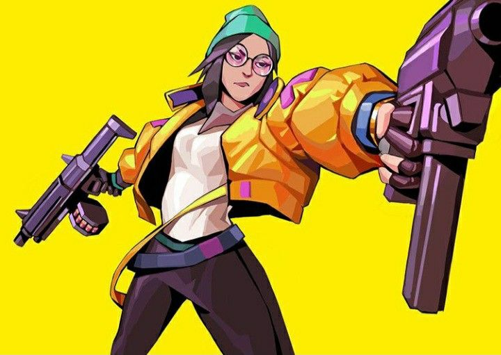

Nama: 한선우, Han Sunwoo
Asal Negara: Korea Selatan;
Class: Radiant
Agent: No. 10
Role: Duelist
nama aslinya adalah Zyanya Mondragón.kata Reyna adalah kata Spanyol yang berarti Queen atau Empress. Dia terlihat seperti seseorang yang 25-30 years old.
Sage Valorant merupakan seorang agen wanita yang berasal dari China. Ia mampu menyalurkan rasa percaya diri dan memberikan rasa aman kepada rekan-rekannya di dalam tim.

Killjoy merupakan salah satu agen yang mencuri perhatian para pemain dalam game ini. Karakter ini masuk dalam kategori Sentinels yang memiliki tugas utama sebagai pelindung yang akan bermain di garis belakang.